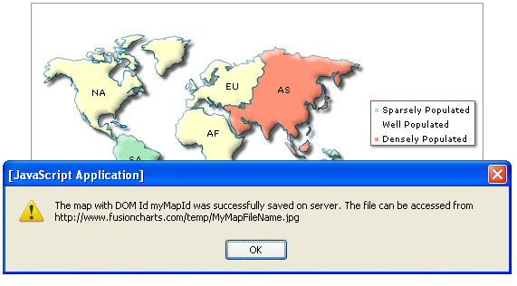

| Saving exported output on server disk |
If you do not wish the exported image to be sent back to browser, but instead want it to be saved on the server, you need to make the following changes from the previous example, where the file was downloaded: Note: Starting FusionMaps XT v3.3.0, JavaScript maps can be exported and saved to a server disk. To do so, you need to configure your own server. The sever should support PHP and JAVA (1.3 or above). Also, you need to place the FusionCharts PHP export handler and Apache Batik SVG Rasterizer library in your server.
Let's first start with Step 1, where you configure the path of your temporary save folder on server and set the HTTP reference for the same. |
| Configuring the server-side export handlers |
In the export handler, you'll need to configure the following:
Depending on which export handler you're using, follow the steps below: |
| If PHP: You can use PHP export handler to export and save both JavaScript and Flash maps |
| For exporting the map as image/PDF at server side using PHP, the following files (can be acquired from FusionMaps Download Pack > ExportHandlers > PHP folder) are required on your server:
If you want to export JavaScript maps, you need to have Java (1.3 or above) running in your server and Apache Batik SVG Rasterizer library available. You can freely download Apache Batik SVG Rasterizer library from http://xmlgraphics.apache.org/batik/
Server configurations to export JavaScript maps
|
| If ASP.NET: |
Open FCExporter.aspx.cs and edit the following: |
/// <summary>
/// IMPORTANT: You need to change the location of folder where
/// the exported map images/PDFs will be saved on your
/// server. Please specify the path to a folder with
/// write permissions in the constant SAVE_PATH below.
///
/// Please provide the path as per ASP.NET path conventions.
/// You can use relative or absolute path.
///
/// Special Cases:
/// '/' means 'wwwroot' directory.
/// '. /' ( without the space after .) is the directory where the FCExporter.aspx file resides.
///
/// Absolute Path :
///
/// can be like this : "C:\\myFolders\\myImages"
/// ( Please never use single backslash as that will stop execution of the code instantly)
/// or "C:/myFolders/myImages"
///
/// You may have a // or \ at end : "C:\\myFolders\\myImages\\" or "C:/myFolders/myImages/"
///
/// You can also have mixed slashes : "C:\\myFolders/myImages"
///
///
/// </summary>
/// directory where the FCExporter.aspx file resides
private const string SAVE_PATH = "./";
/* Place your folder path here.*/
/// <summary>
/// IMPORTANT: This constant HTTP_URL stores the HTTP reference to
/// the folder where exported maps will be saved.
/// Please enter the HTTP representation of that folder
/// in this constant e.g., http://www.yourdomain.com/images/
/// </summary>
private const string HTTP_URL = "http://www.yourdomain.com/images/";
/* Define your HTTP Mapping URL here. */
/// <summary>
/// OVERWRITEFILE sets whether the export handler will overwrite an existing file
/// the newly created exported file. If it is set to false the export handler will
/// not overwrite. In this case, if INTELLIGENTFILENAMING is set to true the handler
/// will add a suffix to the new file name. The suffix is a randomly generated GUID.
/// Additionally, you add a timestamp or a random number as additional suffix.
/// </summary>
/* Define file over-write, auto-naming and naming suffix configuration here. */
private bool OVERWRITEFILE = false;
private bool INTELLIGENTFILENAMING = true;
private string FILESUFFIXFORMAT = "TIMESTAMP";// value can be either 'TIMESTAMP' or 'RANDOM'
|
| If J2EE: |
|
For exporting the map as image/PDF at server-side using JSP, the following library files (can be acquired from FusionMaps XT Download Pack > ExportHandlers > J2EE folder) are required on your server:
Setup
|
#Please specify the path to a folder with write permissions relative to web application root SAVEPATH=./images/ #This constant HTTP_URL stores the HTTP reference to #the folder where exported maps will be saved. #Please enter the HTTP representation of that folder #in this constant e.g., http://www.yourdomain.com/images/ HTTP_URL=http://www.yourdomain.com/images/ #OVERWRITEFILE sets whether the export handler will overwrite an existing file #the newly created exported file. If it is set to false the export handler will #not overwrite. In this case if INTELLIGENTFILENAMING is set to true the handler #will add a suffix to the new file name. The suffix is a randomly generated UUID. #Additionally, you can add a timestamp or random number as additional prefix. OVERWRITEFILE=false INTELLIGENTFILENAMING=true FILESUFFIXFORMAT=TIMESTAMP |
| If Ruby on Rails: |
Open lib/fusioncharts/exporter/properties.rb and make changes in the following values there. |
#IMPORTANT: You need to change the location of folder where # the exported map images/PDFs will be saved on your # server. Please specify the path to a folder with # write permissions in the constant SAVE_PATH below. # This path is relative to the web application root @@SAVEPATH = "./images/" #Used to show as message in SWF #This constant HTTP_URL stores the HTTP reference to #the folder where exported maps will be saved. #Please enter the HTTP representation of that folder #in this constant e.g., http://www.yourdomain.com/images/ @@HTTP_URL = "http://www.yourdomain.com/images/" =begin ---------------------------- Export Settings ------------------------------- OVERWRITEFILE sets whether the export handler will overwrite an existing file the newly created exported file. If it is set to false the export handler will not overwrite. In this case if INTELLIGENTFILENAMING is set to true the handler will add a suffix to the new file name. The suffix is a randomly generated UUID. Additionally, you add a timestamp or random number as additional suffix. =end #Values allowed are true or false @@OVERWRITEFILE = false #Values allowed are true or false @@INTELLIGENTFILENAMING = true #Values allowed are "TIMESTAMP" or "RANDOM" @@FILESUFFIXFORMAT = "TIMESTAMP" |
| Configuring the data |
As previously mentioned, we just need to do the following changes to XML: |
<map borderColor='005879' fillColor='D7F4FF' numberSuffix=' Mill.' includeValueInLabels='0' labelSepChar=': ' baseFontSize='9' exportEnabled='1' exportAtClient='0' exportAction='save' exportHandler='http://www.domain.com/ExportHandlers/index.php' exportFileName='MyFileName'> <colorRange> <color minValue='0' maxValue='500' displayValue='Sparsely Populated' color='A7E9BC' /> <color minValue='500' maxValue='1000' displayValue='Well Populated' color='FFFFCC' /> <color minValue='1000' maxValue='5000' displayValue='Densely Populated' color='FF9377' /> </colorRange> <data> <entity id='NA' value='515' /> <entity id='SA' value='373' /> <entity id='AS' value='3875' /> <entity id='EU' value='727' /> <entity id='AF' value='885' /> <entity id='AU' value='32' /> </data> </map> |
This instructs the map to save the exported image on server. Note that we've not provided a file name here. If not provided, it takes the default value of "FusionCharts". You can, however, specify your file name using the exportFileName attribute of the <map> element. However, since in this case, the server path could already have another file name with the same name, the following conditional logic takes place:
|
| Setting up the call back handler |
Now that everything else is setup, the only thing left is to define a JavaScript callback function handler. This callback function is invoked when the map gets a response from server - in both success and failure cases. To specify your callback function to the map, you need to specify the function name as exportCallback attribute of the <map> element as under: <map ... exportCallback='myCallBackFunction' ...> And you then need to define this function in your JavaScript code. However, if you do not define any call back function in your XML, the default callback function FC_Exported is invoked. In either case, an object is passed to the function as FC_Exported(objRtn) or myCallBackFunction(objRtn), which contains the following parameters (returned from server):
Let's quickly see an example code where a callback function has been implemented. In this example, once we receive the confirmation from server, we just show it in a JavaScript alert. |
<html> |
In the above code, note how the default FC_Exported method is called once the server-side export of map is completed. When you run this code, you'll get the following output.  Here, since we've just one map in the page, we didn't put any if-then block to check the DOMId of the map. However, if you've multiple maps in a page, you can use the if-then statements (based on DOMId string match) to take a different course of action when each map in the page has been saved. |